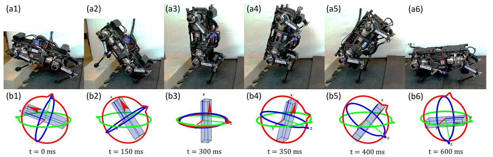
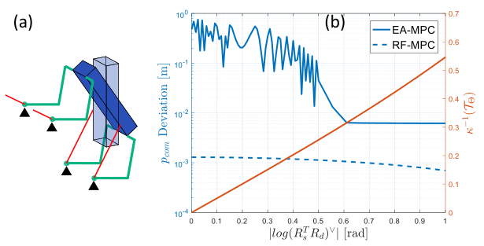
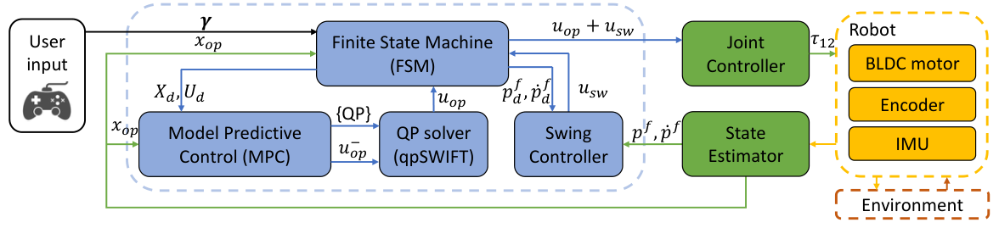
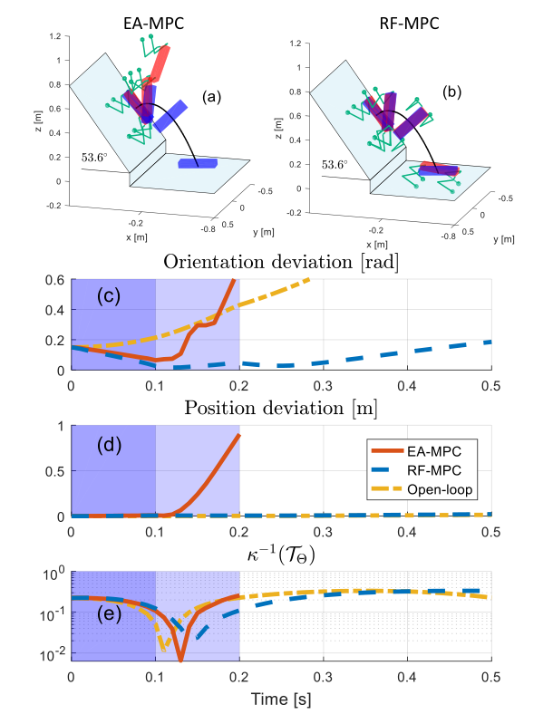
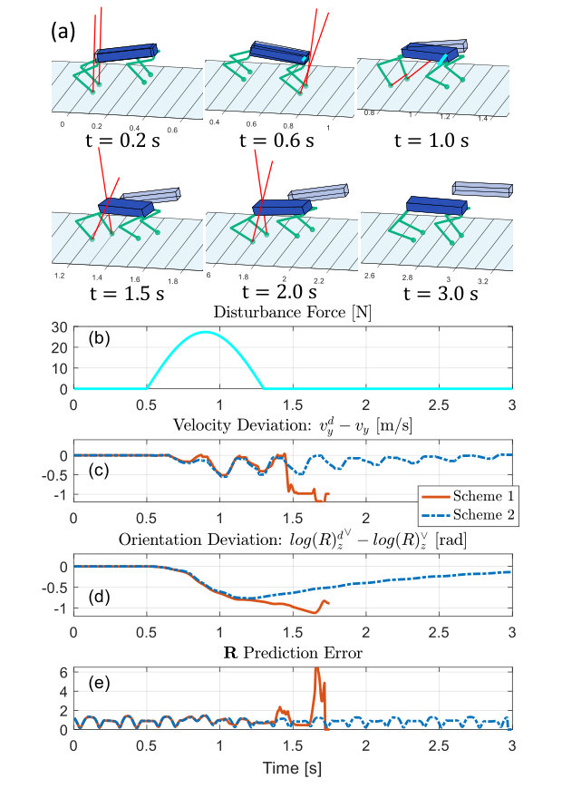

Background & Motivation
RF-MPC 把四足機身的姿態直接用旋轉矩陣 \(R\in\mathrm{SO}(3)\) 表示,不經過 Euler 角或四元數。作者在當前姿態附近做 variation-based 線性化(\(R_k\approx R_{op}\exp(\hat\xi_k)\)),再把姿態誤差近似成 \(\xi_k\) 的仿射函數,讓整個單剛體 MPC 變成標準 QP,在 5.5 kg 的 Panther 上以 160–250 Hz 即時求解。結果是:實機完成多種步態,並做出一個穿越 Euler 角奇異姿態的受控後空翻,這是 Euler 角 MPC 在模擬中會發散的情境。
RF-MPC represents the quadruped body orientation directly with the rotation matrix \(R\in\mathrm{SO}(3)\), with no Euler angles or quaternions. The authors linearize around the current attitude with a variation-based scheme (\(R_k\approx R_{op}\exp(\hat\xi_k)\)) and approximate the orientation error as an affine function of \(\xi_k\), so the whole single-rigid-body MPC becomes a standard QP solved in real time at 160–250 Hz on the 5.5 kg robot Panther. The payoff: several gaits on hardware and a controlled backflip that passes through the Euler-angle singularity, the very situation where Euler-angle MPC diverges in simulation.

如果只有 30 秒In 30 seconds
- 問題 — 四足 MPC 社群幾乎都用 Euler 角描述姿態,在 pitch \(=\pm\pi/2\) 有奇異點(gimbal lock);四元數雖無奇異,卻雙重覆蓋 \(\mathrm{SO}(3)\),會出現 unwinding,預測式控制又不適合切換 chart。翻轉、爬垂直面這類大角度動作因此做不了。
- Problem — Quadruped MPC almost always uses Euler angles for attitude, which are singular at pitch \(=\pm\pi/2\) (gimbal lock). Quaternions avoid the singularity but double-cover \(\mathrm{SO}(3)\), causing unwinding, and chart switching is a bad fit for predictive control. Flips, vertical climbing and other large-rotation motions are therefore off the table.
- 方法 — 狀態直接帶旋轉矩陣 \(R\);在當前姿態 \(R_{op}\) 的切空間用 3 維向量 \(\xi\) 描述偏差,variation-based 線性化 + Kronecker 向量化得到仿射動力學;仿射化的姿態誤差讓 cost 保持二次正定,最後變成可在嵌入式電腦上快速求解的 QP(自家 solver qpSWIFT)。
- Method — Keep the rotation matrix \(R\) in the state; describe deviations by a 3-vector \(\xi\) in the tangent space at the current attitude \(R_{op}\). Variation-based linearization + Kronecker vectorization give affine dynamics, and an affine orientation error keeps the cost quadratic and positive definite. The result is a QP that an embedded computer solves quickly (with the authors' own solver, qpSWIFT).
- 結果 — 模擬中 Euler 角 MPC 在離奇異姿態 \(\lt 0.3\) rad 時明顯失穩,RF-MPC 不受影響;實機上完成 pose/平衡控制、walking/running trot、bounding,以及 10 次受控後空翻(\(\kappa^{-1}(\mathcal{T}_\Theta)\) 降到 \(10^{-1}\) 以下,即確實經過奇異點)。
- Results — In simulation, Euler-angle MPC degrades badly once within \(0.3\) rad of the singular pose, while RF-MPC is unaffected. On hardware: pose/balance control, walking and running trot, bounding, and 10 controlled backflip trials (\(\kappa^{-1}(\mathcal{T}_\Theta)\) drops below \(10^{-1}\), so the robot really does pass through the singularity).
領域脈絡Field context
2018–2020 年,四足控制的主流是 MPC + 簡化模型:把整台機器人看成一個單剛體(Single Rigid Body, SRB),腿質量忽略(Panther 的腿加起來 \(\lt 10\%\) 總質量),每個控制週期解一個有限時域最佳化問題,輸出四隻腳的地面反作用力(GRF)。MIT Cheetah 3 的 convex MPC(Di Carlo 2018,本文 [55])是代表作,它能變成凸 QP,關鍵之一是用 Euler 角並假設姿態不偏離 nominal 太多。
From 2018–2020, mainstream quadruped control was MPC on a simplified model: treat the whole robot as a single rigid body (SRB), ignore leg mass (Panther's legs are \(\lt 10\%\) of total mass), and at each control cycle solve a finite-horizon optimization that outputs the four ground reaction forces (GRFs). MIT Cheetah 3's convex MPC (Di Carlo 2018, ref. [55]) is the flagship; one key to its convex QP form is using Euler angles and assuming the attitude stays near nominal.
對平地行走,這個假設很合理;但只要動作要 大幅轉動機身(像山羊爬近乎垂直的崖壁、狗跑酷的翻越動作),姿態就可能經過 Euler 角的奇異點附近。另一方面,幾何控制(geometric control)在 UAV 領域早已示範:直接在 \(\mathrm{SO}(3)\) 上用旋轉矩陣設計控制器,可以全域、無奇異(Lee et al. [48]);Wu & Sreenath [33] 進一步提出 \(\mathrm{SO}(3)\) 上的 variation-based linearization。RF-MPC 把這條幾何控制的工具線,帶進預測式的足式機器人控制。
For flat-ground walking the assumption is fine. But any motion that rotates the body a lot, such as a goat on a near-vertical cliff or a parkour dog, can bring the attitude near the Euler-angle singularity. Meanwhile, geometric control in the UAV world had already shown that designing controllers directly on \(\mathrm{SO}(3)\) with rotation matrices is global and singularity-free (Lee et al. [48]), and Wu & Sreenath [33] proposed variation-based linearization on \(\mathrm{SO}(3)\). RF-MPC carries that geometric-control toolkit into predictive control for legged robots.
[導讀補充] 這篇的賭注是「換座標,不換 solver」:保留 convex MPC 那種「每拍解一個 QP」的速度優勢,只把姿態的表示與線性化方式換成幾何上正確的版本。它不走 NMPC(一般非線性規劃)那條更準但更重的路,而是證明:只要線性化做在流形上,QP 也能撐起翻轉動作。
[guide note] The bet is change the coordinates, not the solver: keep convex MPC's one-QP-per-tick speed and only swap the attitude representation and linearization for a geometrically correct one. Instead of the more accurate but heavier NMPC route, it shows that a QP can handle flipping motions as long as the linearization is done on the manifold.
核心洞見 · KEY INSIGHTSKEY INSIGHTS
值得帶走的不只是「四足會後空翻了」,還有下面幾個觀念:
The takeaway is not just that a quadruped can backflip, but these ideas:
- 奇異點屬於座標,不屬於機器人。 Euler 角在 pitch \(\pm\pi/2\) 的奇異,是「把 \(\mathrm{SO}(3)\) 攤平成三個角度」這個參數化造成的;旋轉矩陣本身是全域、唯一的表示。問題出在控制器的模型,不在物理上。
- The singularity belongs to the coordinates, not the robot. The Euler-angle singularity at pitch \(\pm\pi/2\) comes from the parametrization that flattens \(\mathrm{SO}(3)\) into three angles; the rotation matrix itself is a global, unique representation. The flaw lives in the controller's model, not in the physics.
- 在流形上線性化,局部座標每拍重新置中。 偏差 \(\xi\) 定義在當前姿態 \(R_{op}\) 的切空間,且每個 MPC 週期 \(x_{t|t}=x_{op}\) 讓 \(\xi_0=0\)。[導讀補充] 等於「每拍都換一張以當下姿態為中心的局部地圖」,所以永遠不會走到地圖邊緣(奇異點)。
- Linearize on the manifold, re-center the local chart every tick. The deviation \(\xi\) lives in the tangent space at the current attitude \(R_{op}\), and every MPC cycle sets \(x_{t|t}=x_{op}\), so \(\xi_0=0\). [guide note] It amounts to drawing a fresh local map centered on today's attitude at each tick, so the map's edge (the singularity) is never reached.
- 兩個小技巧把矩陣問題壓回 QP。 (i) 用常數矩陣 \(N\) 與 Kronecker 積把 \(\dot R\) 這種矩陣乘矩陣的式子寫成向量仿射式;(ii) 把含矩陣對數的姿態誤差近似成 \(\log(R_d^\top R_{op})^\vee+\xi\),cost 因此是 \(\xi\) 的二次正定函數。
- Two tricks squeeze a matrix problem back into a QP. (i) A constant matrix \(N\) plus Kronecker products turn matrix-matrix expressions like \(\dot R\) into affine vector form; (ii) the matrix-log orientation error is approximated as \(\log(R_d^\top R_{op})^\vee+\xi\), so the cost is quadratic and positive definite in \(\xi\).
- 反直覺:在「當前狀態」線性化比在「參考軌跡」線性化更穩。 後者用的資訊更多(時變 \(A_k,B_k\)),但當機器人被推離參考時,線性模型在錯的地方展開,預測就崩了(Fig.7)。
- Counter-intuitive: linearizing at the current state beats linearizing along the reference. The latter uses more information (time-varying \(A_k,B_k\)), but once the robot is pushed off the reference the model is expanded at the wrong place and prediction collapses (Fig.7).
- 代價寫在式子裡。 一階近似使預測出的 \(R_k\) 不在 \(\mathrm{SO}(3)\) 上,預測時域越長誤差越大,所以 horizon 長度變成「看得遠」與「模型準」之間的取捨。
- The price is written into the equations. The first-order approximation means the predicted \(R_k\) is not on \(\mathrm{SO}(3)\); error grows with the horizon, so horizon length becomes a trade-off between seeing far and keeping the model accurate.
Problem Diagnosis
現況 vs 痛點Status quo vs pain points
| 姿態表示Attitude representation | 優點Upside | 痛點Pain point |
|---|---|---|
| Euler 角Euler angles [23]–[26], [55] | 3 個數字、直觀,小角度下線性化很準。Three numbers, intuitive, very accurate linearization at small angles. | 在 pitch \(\theta=\pm\pi/2\) 奇異:\(\dot\Theta=\mathcal{T}_\Theta^{-1}\omega\) 中出現 \(1/\cos\theta\) 與 \(\tan\theta\),接近時數值爆掉,動作必須避開奇異姿態。Singular at pitch \(\theta=\pm\pi/2\): \(\dot\Theta=\mathcal{T}_\Theta^{-1}\omega\) contains \(1/\cos\theta\) and \(\tan\theta\), which blow up nearby, so motions must steer clear of singular poses. |
| 四元數Quaternion [28]–[31] | 無奇異,UAV 界常用於反應式控制器。Singularity-free; common in reactive UAV controllers. | 雙重覆蓋 \(\mathrm{SO}(3)\)(\(q\) 與 \(-q\) 同一姿態)→ unwinding:起點很接近目標,卻可能繞一大圈。解法是 sign function 或混合系統切換 chart,但對 MPC 這種預測式控制,切換 chart 很麻煩。Double-covers \(\mathrm{SO}(3)\) (\(q\) and \(-q\) are the same attitude) → unwinding: starting close to the target yet rotating through a large angle. Fixes use sign functions or hybrid chart switching, but chart switching is undesirable for predictive controllers like MPC. |
| 旋轉矩陣Rotation matrix [32] | 全域、唯一、無奇異,是 \(\mathrm{SO}(3)\) 的原生表示。Global, unique, singularity-free: the native representation of \(\mathrm{SO}(3)\). | 動力學 \(\dot R=R\hat\omega\) 非線性,且 \(R\) 受 \(R^\top R=I,\ \det R=1\) 約束。直接塞進 MPC 會變成非凸 NLP,難以在嵌入式電腦上即時求解。Dynamics \(\dot R=R\hat\omega\) are nonlinear and \(R\) is constrained by \(R^\top R=I,\ \det R=1\). Plugged straight into MPC it becomes a nonconvex NLP, hard to solve in real time on an embedded computer. |
本文要回答的核心問題:能不能保留旋轉矩陣的全域性,同時讓 MPC 仍是一個能以數百 Hz 求解的 QP?
The core question: can we keep the rotation matrix's global validity and still have the MPC be a QP solvable at hundreds of Hz?
Euler 角的奇異點到底在哪Where exactly the Euler singularity sits
本文的 Euler 角 MPC(EA-MPC)用 Z-Y-X 順序:\(R=R_z(\psi)R_y(\theta)R_x(\phi)\)。角速度與 Euler 角速率的關係是
The Euler-angle MPC (EA-MPC) in the paper uses the Z-Y-X sequence, \(R=R_z(\psi)R_y(\theta)R_x(\phi)\). Angular velocity relates to Euler-angle rates by
\(\mathcal{T}_\Theta\) 在 \(\theta=\pm\pi/2\) 不可逆 [導讀補充] 可直接算出 \(\det\mathcal{T}_\Theta=\cos\theta\)。作者用條件數的倒數 \(\kappa^{-1}(\mathcal{T}_\Theta)\in(0,1]\) 量化「離奇異多近」:越接近 0 越危險。後面所有實驗都用這個量證明機器人「真的經過了奇異點」。
\(\mathcal{T}_\Theta\) is not invertible at \(\theta=\pm\pi/2\) [guide note] one can check \(\det\mathcal{T}_\Theta=\cos\theta\). The authors quantify closeness to singularity with the inverse condition number \(\kappa^{-1}(\mathcal{T}_\Theta)\in(0,1]\): the closer to 0, the more dangerous. Every later experiment uses it to prove the robot really passed through the singularity.

Gap 表 — 誰缺什麼,RF-MPC 怎麼補Gap table — who lacks what, and how RF-MPC fills it
| 既有方法Existing method | 限制Limitation | RF-MPC 如何補上How RF-MPC fills it |
|---|---|---|
| Convex MPC Di Carlo 2018 [55] |
Euler 角 + 姿態接近 nominal 的假設;大角度動作不在設計範圍內。Euler angles + near-nominal attitude assumption; large rotations are outside its design envelope. | 直接用 \(R\);在 \(\mathrm{SO}(3)\) 上線性化,任意姿態都適用,仍維持 QP。Use \(R\) directly; linearize on \(\mathrm{SO}(3)\), valid at any attitude, still a QP. |
| 四元數控制器Quaternion controllers [30], [31] |
需處理雙重覆蓋(sign function / 混合系統),不適合預測式控制。Must handle the double cover (sign function / hybrid system); a poor fit for predictive control. | 旋轉矩陣一對一覆蓋 \(\mathrm{SO}(3)\),無 chart 切換。Rotation matrices cover \(\mathrm{SO}(3)\) one-to-one; no chart switching. |
| NMPC / TO [36], [37] |
非凸、有局部最優,不易在嵌入式電腦即時跑。Nonconvex with local optima; hard to run in real time on embedded hardware. | 線性化 + 向量化後是凸 QP,qpSWIFT 160–250 Hz。After linearization + vectorization it is a convex QP; qpSWIFT at 160–250 Hz. |
| 作者 ICRA 2019 版Authors' ICRA 2019 version [1] |
用 9 維 variation 矩陣;姿態 cost 只在預測的 \(R\) 落在 \(\mathrm{SO}(3)\) 上時才保證正定。Used a 9-D variation matrix; the orientation cost was positive definite only when the predicted \(R\) lay on \(\mathrm{SO}(3)\). | 改用 3 維 variation 向量 \(\xi\);新的姿態誤差恆為正定;新增線性化方案比較、running trot、後空翻實驗。Switch to a 3-D variation vector \(\xi\); the new orientation cost is always positive definite; adds a linearization-scheme study, running trot and backflip experiments. |
注意作者自己也承認:其他表示法可以為特定動作「重新對齊」以避開奇異(例如換一個 Euler 順序)。所以旋轉矩陣的真正賣點不是「某一個動作做得到」,而是不必為每個動作挑座標,任意 3D 姿態都用同一個控制器。這個論點要靠真正 3D 的動作來支撐,讀 Results 時請記住這點。
Note the authors themselves concede that other representations can be re-aligned for a specific motion to dodge their singularity (e.g. a different Euler sequence). So the rotation matrix's real selling point is not that one particular motion becomes possible, but that you never have to pick coordinates per motion: one controller for any 3D attitude. That argument needs truly 3D motions to back it up, so keep it in mind when reading Results.
Core Method
整體流程:從非線性單剛體到一個 QPThe pipeline: from a nonlinear rigid body to one QP
一般 MPC 的形式是:最小化終端 cost \(\ell_T\) 加上 \(N\) 步 stage cost \(\ell\),受限於動力學 \(x_{t+k+1|t}=f(x)+g(x)u\)、狀態/輸入集合,以及初值 \(x_{t|t}=x_{op}\)(下標 \(op\) = 當前 operating point)。若 \(f,g\) 非線性,就是 NMPC。本文的整個推導,就是把這個問題一步步改寫成 QP。
Generic MPC minimizes a terminal cost \(\ell_T\) plus \(N\) stage costs \(\ell\), subject to dynamics \(x_{t+k+1|t}=f(x)+g(x)u\), state/input sets, and the initial condition \(x_{t|t}=x_{op}\) (subscript \(op\) = the current operating point). With nonlinear \(f,g\) this is NMPC. The whole derivation is about rewriting this problem into a QP, step by step.
逐步推導Step-by-step derivation
狀態把旋轉矩陣原封不動放進去(攤成向量),角速度表示在機身座標 \(\{B\}\):
The state keeps the rotation matrix as is (reshaped into a vector), with angular velocity expressed in the body frame \(\{B\}\):
四腳 GRF \(u_i\in\mathbb{R}^3\) 作用在腳位置 \(p^f_i\),相對 CoM 的力臂 \(r_i=p^f_i-p\)。合成的外力 wrench:
Each GRF \(u_i\in\mathbb{R}^3\) acts at foot position \(p^f_i\), with lever arm \(r_i=p^f_i-p\) from the CoM. The net wrench:
完整動力學(\(M=5.5\) kg,\(a_g=[0,0,-g]^\top\),\({}^BI\) 是機身座標下的常數慣量):
Full dynamics (\(M=5.5\) kg, \(a_g=[0,0,-g]^\top\), \({}^BI\) the constant body-frame inertia):
非線性來源有三個:\(\dot R=R\hat\omega\) 是 \(R\) 與 \(\omega\) 的乘積;陀螺項 \(\hat\omega I\omega\) 對 \(\omega\) 二次;\(\tau=\sum\hat r_i u_i\) 是力臂與力的乘積。平移部分(\(p,\dot p\))本來就是線性的。
Three sources of nonlinearity: \(\dot R=R\hat\omega\) is a product of \(R\) and \(\omega\); the gyroscopic term \(\hat\omega I\omega\) is quadratic in \(\omega\); \(\tau=\sum\hat r_i u_i\) multiplies lever arms and forces. The translational part (\(p,\dot p\)) is already linear.
假設預測的姿態離當前姿態 \(R_{op}\) 不遠,用李代數 \(\mathfrak{so}(3)\) 上的小偏差 \(\delta R_k\) 描述,並取矩陣指數的一階展開:
Assume predicted attitudes stay close to the current one, \(R_{op}\); describe the offset by a small element \(\delta R_k\) of the Lie algebra \(\mathfrak{so}(3)\) and take the first-order expansion of the matrix exponential:
作者明說這裡用了「小旋轉可交換」的假設(\(\delta R\) 小)。\(\xi_k\) 就是最終進 QP 的姿態變數:3 個數字,但定義在 \(R_{op}\) 的切空間,而不是任何全域角度。
The authors explicitly invoke commutativity of small rotations (small \(\delta R\)). \(\xi_k\) is the attitude variable that ends up in the QP: three numbers, but defined in the tangent space at \(R_{op}\), not as any global angle.
\(\dot R_k\) 與 \(\dot R_{op}\) 位在不同的切空間,不能直接相減,所以先用 transport map \(\omega_{op}\mapsto R_k^\top R_{op}\omega_{op}\) 把 \(\omega_{op}\) 搬過來再比較:
\(\dot R_k\) and \(\dot R_{op}\) live in different tangent spaces and cannot be subtracted directly, so first move \(\omega_{op}\) over with the transport map \(\omega_{op}\mapsto R_k^\top R_{op}\omega_{op}\):
最後一步用了 \(\delta R_k\) 是斜對稱矩陣(\(\delta R_k^\top=-\delta R_k\))。
The last step uses skew-symmetry, \(\delta R_k^\top=-\delta R_k\).
把 STEP 2、3 代回 \(\dot R=R\hat\omega\),丟掉二階以上的 variation 項:
Substitute STEPs 2–3 into \(\dot R=R\hat\omega\) and drop higher-order variation terms:
再用叉積恆等式 \(\widehat{\delta R_k\omega_{op}}=\delta R_k\hat\omega_{op}-\hat\omega_{op}\delta R_k\) 消去,得到漂亮的形式:
The cross-product identity \(\widehat{\delta R_k\omega_{op}}=\delta R_k\hat\omega_{op}-\hat\omega_{op}\delta R_k\) then simplifies it to:
角速度動力學同樣在 operating point 展開(\(\delta\tau_k\) 是淨力矩的 variation,\(\delta u\) 是 GRF 相對 \(u_{op}\) 的變化):
Angular-velocity dynamics are expanded the same way (\(\delta\tau_k\): variation of the net torque; \(\delta u\): GRF change from \(u_{op}\)):
\(\delta\tau\) 的第一項來自「CoM 移動 → 力臂改變」,第二項來自「力改變」。決策變數因此從 \(u\) 變成 \(\delta u\),下一拍實際施加的 GRF 是 \(u_{op}+\delta u_1\)。
The first term of \(\delta\tau\) comes from the CoM moving (lever arms change), the second from the forces changing. The decision variable therefore becomes \(\delta u\) instead of \(u\); the GRF applied next is \(u_{op}+\delta u_1\).
上面還是「矩陣乘矩陣」,QP 要的是「矩陣乘向量」。作者定義常數矩陣 \(N\in\mathbb{R}^{9\times3}\) 使 \(\mathrm{vec}(\hat v)=Nv\),再用 Kronecker 積的標準恆等式 \(\mathrm{vec}(AXB)=(B^\top\otimes A)\,\mathrm{vec}(X)\):
These are still matrix-times-matrix; a QP needs matrix-times-vector. Define a constant \(N\in\mathbb{R}^{9\times3}\) with \(\mathrm{vec}(\hat v)=Nv\), then use the standard Kronecker identity \(\mathrm{vec}(AXB)=(B^\top\otimes A)\,\mathrm{vec}(X)\):
離散化用 forward Euler:\(R_{k+1}=R_k+\dot R_k\,dt\),配合一階近似得 \(\delta R_{k+1}=\delta R_k+R_{op}^\top\dot R_k\,dt\)。向量化後左乘 \(N\) 的左偽逆 \(N^{*}\):
Discretize with forward Euler, \(R_{k+1}=R_k+\dot R_k\,dt\); with the first-order approximation this gives \(\delta R_{k+1}=\delta R_k+R_{op}^\top\dot R_k\,dt\). Vectorize and pre-multiply by the left pseudo-inverse \(N^{*}\):
[導讀補充] 符號小坑 由 STEP 3 可推出 \(\delta\omega_k=\omega_k-\omega_{op}-\hat\omega_{op}\xi_k\)(因為 \(\hat\xi\,\omega_{op}=-\hat\omega_{op}\xi\))。論文 eq.(22) 與 eq.(17) 的常數都和這個負號一致,但 arXiv 版 eq.(15) 印成 \(+\hat\omega_{op}\xi_k\),應是筆誤。自己實作時以 (17)/(22) 為準。
[guide note] Sign gotcha From STEP 3, \(\delta\omega_k=\omega_k-\omega_{op}-\hat\omega_{op}\xi_k\) (since \(\hat\xi\,\omega_{op}=-\hat\omega_{op}\xi\)). The constants in the paper's eq.(22) and eq.(17) agree with this minus sign, but eq.(15) in the arXiv version prints \(+\hat\omega_{op}\xi_k\), most likely a typo. If you implement it, follow (17)/(22).
新的狀態把 9 維的 \(R\) 換成 3 維的 \(\xi\),狀態與輸入都是 12 維:
The new state swaps the 9-D \(R\) for the 3-D \(\xi\); state and input are both 12-D:
\(A|_{op},B|_{op},d|_{op}\) 只由當前量測建構,在整個預測時域內是常數(作者稱為 scheme 2,LTI)。另一個選擇是沿參考軌跡逐步線性化(scheme 1,LTV),兩者的比較見 Results。
\(A|_{op},B|_{op},d|_{op}\) are built only from the current measurement and stay constant over the horizon (the authors' scheme 2, LTI). The alternative is to linearize along the reference trajectory (scheme 1, LTV); see Results for the comparison.
Stage cost 是標準的追蹤二次式,可拆成四種誤差:
The stage cost is a standard quadratic tracking cost, split into four error terms:
\(e_{R}\) 含矩陣對數,對 \(\xi\) 非線性。作者再用一次 STEP 2 的近似:
\(e_R\) contains the matrix logarithm and is nonlinear in \(\xi\). The authors reuse the STEP 2 approximation:
幾何意義:誤差 = 「\(R_{op}\) 到 \(R_{d,k}\) 的測地線」+「切空間中的 \(\xi_k\)」。前者是已知常數,所以整體對 \(\xi_k\) 是仿射。控制 cost 寫成 \(\|u_{op}+\delta u_k-u_{d,k}\|^2_{R_u}\)。[導讀補充] 嚴格來說,\(\log(A\exp(\hat\xi))^\vee\approx\log(A)^\vee+J_r^{-1}(\log(A)^\vee)\,\xi\),其中有一個右 Jacobian 的逆;本文等於把它取成單位矩陣。當 \(R_{op}\) 離 \(R_{d,k}\) 很遠(例如被推離參考時),這是另一層近似。
Geometric meaning: error = the geodesic from \(R_{op}\) to \(R_{d,k}\) + the tangent vector \(\xi_k\). The former is a known constant, so the whole thing is affine in \(\xi_k\). The control cost is \(\|u_{op}+\delta u_k-u_{d,k}\|^2_{R_u}\). [guide note] Strictly, \(\log(A\exp(\hat\xi))^\vee\approx\log(A)^\vee+J_r^{-1}(\log(A)^\vee)\,\xi\) with an inverse right Jacobian; the paper effectively sets it to the identity. When \(R_{op}\) is far from \(R_{d,k}\) (e.g. after a push), this is one more layer of approximation.
真正的摩擦錐是二階錐約束,QP 吃不下,所以換成保守的摩擦金字塔,並加上法向力上下界(避免超過馬達扭矩):
The true friction cone is a second-order-cone constraint a QP cannot take, so it is replaced by the conservative friction pyramid, plus normal-force bounds (to respect actuator torque limits):
擺動腿的上下界都設成 0(力必為 0),交給 swing leg controller。接觸時序由有限狀態機(FSM)提供,預測時域可以跨越接觸切換,所以 MPC 能預先為下一個騰空期準備。
For a swing leg both bounds are set to 0 (zero force) and the swing-leg controller takes over. The contact schedule comes from a finite state machine (FSM), and the horizon can span contact switches, so MPC can prepare ahead for an upcoming flight phase.
\(\gamma\in(0,1]\) 是衰減因子,讓越遠(模型越不準)的步驟權重越小。狀態約束全部拿掉,只靠 cost 調節。採用 Wang & Boyd [52] 的稀疏寫法(狀態與輸入都是變數)。\(N=6\) 時,QP 有 144 個變數、72 條不等式、72 條等式。
\(\gamma\in(0,1]\) is a decay factor that down-weights distant steps where the model is less accurate. All state constraints are dropped; states are regulated by the cost only. The sparse formulation of Wang & Boyd [52] is used (states and inputs are both variables). With \(N=6\) the QP has 144 variables, 72 inequality and 72 equality constraints.
系統架構:MPC 在整個控制迴路中的位置System architecture: where MPC sits in the loop

| 元件Component | 做法 / 頻率How / rate |
|---|---|
| MPC + qpSWIFT | Simulink Real-Time,PC104(Intel i7-3517UE 1.70 GHz);依問題大小 160–250 Hz。qpSWIFT 是作者自寫、無外部依賴的 ANSI C 稀疏 QP solver [58]。Simulink Real-Time on a PC104 (Intel i7-3517UE 1.70 GHz); 160–250 Hz depending on problem size. qpSWIFT is the authors' library-free ANSI C sparse QP solver [58]. |
| 感測 / 估測Sensing / estimation | 編碼器與低階運動學 4 kHz;IMU 與狀態估測 1 kHz;互補濾波器融合腿運動學速度與加速度計。Encoders and low-level kinematics at 4 kHz; IMU and state estimation at 1 kHz; complementary filters fuse leg-kinematic velocity with the accelerometer. |
| 擺動腿Swing leg | 3 連桿操作空間逆動力學前饋 + PD 回饋;落腳點 = 速度前饋 + capture-point 回饋。3-link workspace inverse-dynamics feed-forward + PD feedback; foothold = velocity feed-forward + capture-point feedback. |
| 接觸偵測Contact detection | 只看膝關節的 generalized-momentum 擾動觀測器,殘差超過門檻即判定觸地。Generalized-momentum disturbance observer on the knee joints only; touchdown when the residual exceeds a threshold. |
| 系統辨識System ID | 23.36:1 行星減速 → 需摩擦補償;CoM 用吊線 + 加速度計最小平方求得;慣量用雙線扭擺量測(CAD 對小機器人不準)。23.36:1 planetary gearing → friction compensation; CoM from string suspension + accelerometer least squares; inertia from a bifilar torsional pendulum (CAD is inaccurate for a small robot). |
符號白話對照Symbols in plain words
| \(p,\ \dot p\) | CoM 位置與速度(慣性座標 \(\{S\}\))。CoM position and velocity (inertial frame \(\{S\}\)). |
| \(R\in\mathrm{SO}(3)\) | 機身座標 \(\{B\}\) 相對 \(\{S\}\) 的旋轉矩陣:姿態的全域表示。Rotation of body frame \(\{B\}\) in \(\{S\}\): the global attitude representation. |
| \({}^B\omega\) | 機身座標下的角速度。Angular velocity expressed in the body frame. |
| \(u_i,\ r_i\) | 第 \(i\) 腳的 GRF,以及 CoM 到該腳的力臂。GRF of leg \(i\), and the lever arm from CoM to that foot. |
| \(\hat{(\cdot)},\ (\cdot)^\vee\) | hat map:3 維向量 → 斜對稱矩陣(代表叉積);vee map 是其逆。Hat map: 3-vector → skew-symmetric matrix (the cross product); vee is its inverse. |
| \((\cdot)_{op}\) | operating point:當前量測的狀態 \(x_{op}\) 與上一拍解出的控制 \(u_{op}\)。Operating point: the current measured state \(x_{op}\) and the previous tick's control \(u_{op}\). |
| \(\xi_k,\ \delta R_k=\hat\xi_k\) | 第 \(k\) 步預測姿態相對 \(R_{op}\) 的小偏差,位在 \(R_{op}\) 的切空間;進 QP 的姿態變數。Small attitude offset of step \(k\) from \(R_{op}\), living in the tangent space at \(R_{op}\); the attitude variable in the QP. |
| \(\delta\omega_k,\ \delta u_k\) | 角速度(經 transport 後)與 GRF 相對 operating point 的變化。Variations of angular velocity (after transport) and GRF from the operating point. |
| \(N,\ N^{*},\ \otimes\) | \(N\):把 \(v\) 映到 \(\mathrm{vec}(\hat v)\) 的 \(9\times3\) 常數矩陣;\(N^{*}\):其左偽逆;\(\otimes\):Kronecker 積。\(N\): the \(9\times3\) constant matrix mapping \(v\) to \(\mathrm{vec}(\hat v)\); \(N^{*}\): its left pseudo-inverse; \(\otimes\): Kronecker product. |
| \(e_R,\ e_\omega\) | 姿態與角速度的追蹤誤差(Bullo & Lewis [32] 的定義);\(e_R\) 被近似成 \(\xi\) 的仿射函數。Attitude and angular-velocity tracking errors (Bullo & Lewis [32]); \(e_R\) is approximated as affine in \(\xi\). |
| \(\gamma,\ N\) | cost 的時間衰減因子;預測步數(實驗中 6 或 7)。Temporal decay factor of the cost; number of prediction steps (6 or 7 in experiments). |
| \(\mu\) | 摩擦係數,用於摩擦金字塔。Friction coefficient, used in the friction pyramid. |
| \(\kappa^{-1}(\mathcal{T}_\Theta)\) | Euler 角映射矩陣條件數的倒數:\(1\) = 遠離奇異,\(\to0\) = 逼近 gimbal lock。只拿來診斷,RF-MPC 本身不用它。Inverse condition number of the Euler-rate matrix: \(1\) = far from singular, \(\to0\) = gimbal lock. Used only for diagnosis; RF-MPC itself never uses it. |
| \(\Phi(t)\) | 旋轉矩陣預測品質:\(\sum_k\|\tilde R_k-\bar R_k\|_F+\|\log(R_{op,t+k}^\top\tilde R_k)^\vee\|\),衡量預測多偏離 \(\mathrm{SO}(3)\) 與真實軌跡。Rotation prediction quality: \(\sum_k\|\tilde R_k-\bar R_k\|_F+\|\log(R_{op,t+k}^\top\tilde R_k)^\vee\|\), measuring how far predictions drift off \(\mathrm{SO}(3)\) and off the true trajectory. |
Experimental Evidence
主結果總表(模擬 + 實機)Main results at a glance (simulation + hardware)
這篇沒有標準 benchmark,證據是一系列情境示範。模擬用 MATLAB(quadprog 解 QP、ode45 積分原始非線性 SRB 模型);實機在 Panther 上,QP 由 qpSWIFT 解。綠色 = RF-MPC 的關鍵勝出或成就。
There is no standard benchmark; the evidence is a series of scenario demonstrations. Simulation runs in MATLAB (quadprog for the QP, ode45 integrating the original nonlinear SRB model); hardware runs on Panther with qpSWIFT. Green = key RF-MPC wins or achievements.
| 情境Scenario | 平台Where | 設定Setup | 關鍵結果Key result |
|---|---|---|---|
| 奇異點附近的姿態控制Pose control near singularity Fig.3 | 模擬Sim | 目標姿態從奇異姿態掃到繞 \(+y\) 轉 1 rad,每點模擬 0.5 s;四腳固定、無力約束Target swept from the singular pose to 1 rad about \(+y\); 0.5 s per point; feet fixed, no force constraints | EA-MPC 在 \(\lt0.3\) rad(\(\kappa^{-1}\lt0.15\))明顯失穩;RF-MPC 全範圍穩定EA-MPC degrades below \(0.3\) rad (\(\kappa^{-1}\lt0.15\)); RF-MPC stable throughout |
| Walking trot Fig.4 | 模擬Sim | 靜止起步,加速到 0.5 m/sFrom rest, accelerate to 0.5 m/s | 速度偏差 \(\pm0.1\) m/s 內;姿態偏差 \(\pm0.02\) rad 內Velocity deviation within \(\pm0.1\) m/s; attitude within \(\pm0.02\) rad |
| Bounding Fig.5 | 模擬Sim | 以 \(1.0\ \text{m/s}^2\) 加速;參考用 impulse-scaling 生成Accelerate at \(1.0\ \text{m/s}^2\); reference from impulse scaling | 穩定到 2.5 m/s,pitch 相圖收斂到週期軌道Stable up to 2.5 m/s; pitch phase portrait converges to a periodic orbit |
| 斜坡扭轉後空翻Twist backflip off a slope Fig.6 | 模擬Sim | 參考由 45° 斜坡的離線 TO 產生;測試時斜坡改成 53.6°(初始姿態也被擾動)Reference from offline TO on a 45° slope; tested on a 53.6° slope (initial attitude perturbed too) | EA-MPC 接近奇異時出巨大垂直力、發散;open-loop 偏離;RF-MPC 穩定追蹤EA-MPC exerts huge vertical force near singularity and diverges; open-loop drifts; RF-MPC tracks |
| 線性化方案比較Linearization schemes Fig.7 | 模擬Sim | 1.0 m/s bounding,FR 肩部受 \(+y\) 側向擾動,峰值 27 N1.0 m/s bounding; lateral \(+y\) push at the FR shoulder, peak 27 N | scheme 1(沿參考)在 1.5 s 失敗;scheme 2(當前狀態)恢復Scheme 1 (along reference) fails at 1.5 s; scheme 2 (current state) recovers |
| Pose / 平衡控制Pose / balance Fig.11–12 | 實機HW | 搖桿給高度與 y/z 姿態;站在球鉸平台上被人推Joystick height and y/z attitude; standing on a ball-pivoted platform perturbed by hand | 緊貼參考;機身 \(\{B\}\) 的晃動明顯小於平台 \(\{P\}\)(250 Hz)Close tracking; body \(\{B\}\) moves far less than platform \(\{P\}\) (250 Hz) |
| Walking trot Fig.13 | 實機HW | 任意平面方向行走、保持姿態Omnidirectional walking, holding attitude | 姿態偏差 \(\pm0.06\) rad 內(250 Hz)Attitude deviation within \(\pm0.06\) rad (250 Hz) |
| Running trot Fig.14 | 實機HW | 有完整騰空期With full flight phases | 每步約 40 ms 自由落體;垂直 GRF 達 60 N、膝扭矩 6.3 Nm;GRF 隨接觸切換陡變~40 ms free fall per step; vertical GRF up to 60 N, knee torque 6.3 Nm; GRF switches sharply with contact |
| Bounding Fig.15 | 實機HW | 大幅 pitch 振盪;觸地由接觸偵測觸發Large pitch oscillation; touchdown triggered by contact detection | 追上參考 pitch 與 \(\omega_y\)(起步有初始偏移)(160 Hz)Tracks reference pitch and \(\omega_y\) (initial offset from rest) (160 Hz) |
| 受控後空翻Controlled backflip Fig.16–17 | 實機HW | 前腳站 80 mm 平台;10 次試驗;另一次把平台加高到 130 mm 當擾動Front legs on an 80 mm stage; 10 trials; one extra trial with the stage raised to 130 mm as a perturbation | \(\kappa^{-1}(\mathcal{T}_\Theta)\) 降到 \(10^{-1}\) 以下(真的經過奇異);擾動下仍安全落地(200 Hz)\(\kappa^{-1}(\mathcal{T}_\Theta)\) drops below \(10^{-1}\) (truly singular); still lands safely when perturbed (200 Hz) |
核心對照:EA-MPC vs RF-MPC 的扭轉後空翻The headline comparison: EA-MPC vs RF-MPC on a twist backflip

讀法提醒:參考軌跡與前饋 GRF 來自 45° 斜坡的離線 single-shooting TO(24 個變數、fmincon),所以 RF-MPC 在這裡扮演的是「追蹤 + 修正」的回饋控制器,不是規劃出這個動作的人。
Reading note: the reference trajectory and feed-forward GRFs come from an offline single-shooting TO on a 45° slope (24 variables, fmincon), so RF-MPC acts here as a tracking-and-correcting feedback controller, not as the planner that invented the motion.
消融怎麼讀:線性化點選在哪裡Reading the ablation: where to linearize
本文唯一接近 ablation 的實驗,是固定所有其他設定(參考、增益、步態時序、擾動),只換線性化方案:
The paper's only ablation-like study fixes everything else (reference, gains, gait timing, disturbance) and swaps only the linearization scheme:
| 方案Scheme | 展開點 / 模型Expansion point / model | 結果Outcome | 說明了什麼What it shows |
|---|---|---|---|
| Scheme 1 | 沿參考 \(\{x^d,u^d\}\) 逐步線性化 → LTV \(A_k,B_k\)Along the reference \(\{x^d,u^d\}\) → LTV \(A_k,B_k\) | 1.5 s 失敗,速度與姿態發散;\(R\) 預測誤差暴衝Fails at 1.5 s; velocity and attitude diverge; \(R\) prediction error spikes | 被推離參考時,在當前狀態展開的模型比較貼近真實;資訊多不等於模型準。作者的解釋是猜想(conjecture),並非證明。When pushed off the reference, a model expanded at the current state stays closer to reality; more information does not mean a better model. The authors' explanation is a conjecture, not a proof. |
| Scheme 2 | 在 operating point \((x_{op},u_{op})\) 線性化 → 時域內 LTIAt the operating point \((x_{op},u_{op})\) → LTI over the horizon | 擾動後恢復並重新追上參考Recovers and re-tracks the reference |

計算設定:頻率與預測時域(Table II)Compute settings: rate and horizon (Table II)
| 實機實驗HW experiment | \(N_{hor}\) | \(T_{pred}\) (s) | 時域長度Horizon [導讀補充] | \(\gamma\) | \(f_{MPC}\) (Hz) |
|---|---|---|---|---|---|
| Pose / Balance | 6 | 0.02 | 0.12 s | 1.0 | 250 |
| Trot walk | 6 | 0.08 | 0.48 s | 1.0 | 250 |
| Trot run | 6 | 0.05 | 0.30 s | 1.0 | 250 |
| Bound | 7 | 0.01 | 0.07 s | 0.8 | 160 |
| Backflip | 6 | 0.02 | 0.12 s | 0.8 | 200 |
時域長度 = \(N_{hor}\times T_{pred}\),是導讀者依 Table II 計算。越動態的動作,時域反而越短:bounding 只看 0.07 s,比它的單次 stance(\(T_{st}=0.1\) s)還短;後空翻只看 0.12 s。這和作者「時域太長則旋轉動力學不準」的自述一致,也意味著這些動作的「預測」很近視,穩定性很大程度仰賴離線參考軌跡。
Horizon = \(N_{hor}\times T_{pred}\), computed by the guide author from Table II. The more dynamic the motion, the shorter the horizon: bounding looks only 0.07 s ahead, shorter than one stance (\(T_{st}=0.1\) s); the backflip looks 0.12 s ahead. That matches the authors' own remark that long horizons make the rotational dynamics inaccurate, and it means prediction is myopic for these motions, with much of the stability resting on the offline reference.
實機後空翻的數據細節(Fig.17)Hardware backflip details (Fig.17)
- 三個階段:四腳著地 → 只有後腳著地 → 落地。RF-MPC 只在前兩階段啟用,落地改用 impedance control。
- Three phases: four feet down → hind feet only → landing. RF-MPC is active only in the first two phases; landing uses impedance control.
- 參考軌跡由 OptimTraj 直接配點法在 2D 單剛體模型上離線生成(27 個時間點、272 個變數、366 條約束,fmincon);但 RF-MPC 在實機上控制的是 3D 機器人,沒有把矢狀面與面外運動拆開。
- The reference comes from OptimTraj direct collocation on a 2D single-rigid-body model, solved offline (27 knots, 272 variables, 366 constraints, fmincon); yet RF-MPC controls the 3D robot on hardware without splitting sagittal and out-of-plane motion.
- 10 次試驗的平均 ± 1 標準差:\(\kappa^{-1}(\mathcal{T}_\Theta)\) 在約 0.3 s 降到 \(10^{-1}\) 以下;\(\log(R)^\vee_y\) 單調下降到約 \(-\pi\),而 Euler pitch \(\theta\) 先降到 \(-\pi/2\) 再折返回 0,這正是 Euler 角在奇異點附近失去單調性的實機證據。
- Mean ± 1 std over 10 trials: \(\kappa^{-1}(\mathcal{T}_\Theta)\) dips below \(10^{-1}\) around 0.3 s; \(\log(R)^\vee_y\) decreases monotonically to about \(-\pi\), while the Euler pitch \(\theta\) falls to \(-\pi/2\) and then turns back to 0, hardware evidence of Euler angles losing monotonicity at the singularity.
- 擾動試驗:前腳平台從 80 mm 加高到 130 mm,軌跡偏離平均超過 1 個標準差,仍穩定並安全落地(只有 1 次)。
- Perturbation trial: the front stage raised from 80 mm to 130 mm; the trajectory leaves the 1-std tube, yet the robot stays stable and lands safely (a single trial).
Critical Reading
可被質疑的點Contestable points
- 證據分家:對照只在模擬,實機只有自己。所有 EA-MPC vs RF-MPC 的比較(Fig.3、Fig.6)都在 MATLAB,且模擬器積分的正是控制器自己用的 SRB 模型(沒有腿動力學、致動器頻寬、接觸衝擊);Fig.3 甚至拿掉了力約束。這種設定很適合隔離「表示法」的影響,但無法回答實機上差距有多大。
- Split evidence: comparisons only in simulation, hardware only alone. Every EA-MPC vs RF-MPC comparison (Fig.3, Fig.6) is in MATLAB, and the simulator integrates the same SRB model the controller uses (no leg dynamics, actuator bandwidth, or impacts); Fig.3 even lifts the force constraints. That isolates the representation effect nicely, but says nothing about the size of the gap on hardware.
- Baseline 的公平性。EA-MPC 只被描述為「基於 MIT Mini Cheetah 的 convex MPC [55],參數取自 [56]」,它的 Euler 角線性化細節沒有交代。而且作者自己承認其他表示可以為特定動作重新對齊:後空翻是矢狀面動作,若 EA-MPC 換一個讓奇異點落在面外的 Euler 順序,很可能也能完成。真正的優勢(任意 3D 姿態一套控制器)需要真正 3D 的實機動作來支撐,而唯一的 3D 雜技(扭轉後空翻)只有模擬。四元數 MPC 完全沒有被比較。
- Baseline fairness. EA-MPC is described only as "based on the convex MPC [55] used on MIT Mini Cheetah, with parameters from [56]"; its Euler-angle linearization details are not given. And the authors concede other representations can be re-aligned per motion: the hardware backflip is a sagittal-plane motion, so an EA-MPC with an Euler sequence whose singularity lies out of plane might well complete it. The real advantage (one controller for any 3D attitude) needs a truly 3D hardware maneuver, yet the only 3D acrobatic motion (the twist flip) is simulation-only. Quaternion MPC is never compared.
- 計算時間的說法。摘要寫「250 Hz」,但這是最佳情況;bounding 只有 160 Hz、後空翻 200 Hz。論文沒有給出每次 QP 的求解時間分布、與時域長度的關係,也沒有和 convex MPC 在同硬體上比較算力。稀疏寫法的變數是 \(24N\)(狀態也是變數),比濃縮(condensed)寫法大一倍,好處在稀疏結構,但這個取捨沒有被量化。
- The computation-time claim. The abstract says 250 Hz, but that is the best case; bounding runs at 160 Hz and the backflip at 200 Hz. The paper gives no per-QP solve-time distribution, no scaling with horizon, and no same-hardware comparison with convex MPC. The sparse formulation has \(24N\) variables (states included), twice a condensed one; it pays off through sparsity, but the trade-off is not quantified.
- 還有哪些地方仍仰賴線性化。(i) \(\exp(\hat\xi)\approx I+\hat\xi\),預測的 \(R_k\) 不在 \(\mathrm{SO}(3)\);(ii) 姿態誤差 \(\log(R_d^\top R_{op})^\vee+\xi\) [導讀補充] 忽略了右 Jacobian;(iii) forward Euler 離散化;(iv) 時域內 \(A,B\) 凍結在當前狀態(LTI),高角速度時更易失準;(v) \(\delta\tau\) 對力臂與力的一階展開;(vi) 摩擦金字塔是錐的保守內近似;(vii) SRB 假設(腿 \(\lt10\%\) 質量)。「表示」雖然全域,「預測」仍然是局部的。
- What still rests on linearization. (i) \(\exp(\hat\xi)\approx I+\hat\xi\), so predicted \(R_k\) leave \(\mathrm{SO}(3)\); (ii) the attitude error \(\log(R_d^\top R_{op})^\vee+\xi\) [guide note] drops the right Jacobian; (iii) forward-Euler discretization; (iv) \(A,B\) frozen at the current state over the horizon (LTI), riskier at high angular rates; (v) first-order expansion of \(\delta\tau\) in lever arm and force; (vi) the friction pyramid is a conservative inner approximation of the cone; (vii) the SRB assumption (legs \(\lt10\%\) of mass). The representation is global, but the prediction is still local.
- 功勞如何分配。後空翻的動作本身來自離線 TO 的參考軌跡與前饋力,落地交給 impedance control,MPC 時域只有 0.12 s。實機成功有多少來自 RF-MPC 的回饋,多少來自好的參考軌跡、接觸偵測與 swing 控制,論文沒有拆解(沒有「只用前饋 + PD」的實機對照)。
- Credit assignment. The backflip motion itself comes from an offline TO reference with feed-forward forces, landing is handled by impedance control, and the MPC horizon is just 0.12 s. How much of the hardware success is RF-MPC's feedback versus a good reference, contact detection and swing control is not disentangled (no hardware feed-forward + PD-only control run).
- 線性化方案的結論只有一個情境。scheme 1 vs 2 的比較是單一擾動、單一步態、定性比較;作者也明說原因是「猜想」。沒有探討折衷做法(例如沿上一拍的預測軌跡重新線性化,即 SQP/RTI 式 NMPC)。
- The linearization finding rests on one scenario. Scheme 1 vs 2 is one disturbance, one gait, qualitative; the authors call their explanation a conjecture. Middle grounds (e.g. re-linearizing along the previous tick's predicted trajectory, i.e. SQP/RTI-style NMPC) are not explored.
- 小瑕疵:arXiv 版 eq.(15) 的符號與 eq.(17)(22) 不一致 [導讀補充];另外「representation-free」這個名稱容易讓人誤以為完全沒有座標,實際上 \(\xi\) 就是局部指數座標。
- Minor issues: the sign in arXiv eq.(15) disagrees with eqs.(17)(22) [guide note]; and the name "representation-free" invites the misreading that no coordinates are used, when \(\xi\) is in fact a local exponential coordinate.
給讀書會 / 審稿的犀利問題Sharp questions for a reading group / review
- 重新對齊的 Euler 角:若 EA-MPC 改用讓奇異點落在 roll 或 yaw 方向的 Euler 順序,實機矢狀面後空翻還能區分兩者嗎?RF-MPC 有沒有一個非它不可的實機 3D 動作?
- Re-aligned Euler angles: if EA-MPC used a sequence whose singularity lies along roll or yaw, would the sagittal hardware backflip still separate the two? Is there a hardware 3D motion that only RF-MPC can do?
- 一階近似撐多遠:預測誤差 \(\Phi\) 如何隨「時域 \(\times\) 角速度」成長?後空翻時角速度數 rad/s,0.12 s 內的旋轉是否已超出 \(I+\hat\xi\) 的準確範圍?若在預測中把 \(R_k\) 投影回 \(\mathrm{SO}(3)\) 會改善嗎?
- How far does first order go: how does the prediction error \(\Phi\) grow with horizon \(\times\) angular rate? During the backflip the body rotates at several rad/s; is the rotation within 0.12 s already beyond where \(I+\hat\xi\) is accurate? Would projecting predicted \(R_k\) back onto \(\mathrm{SO}(3)\) help?
- 為何不用 NMPC:沿預測軌跡重新線性化(SQP/RTI、或在流形上的 iLQR/DDP)理論上同時解決 scheme 1 與 scheme 2 的問題。在同一台 i7 上,它的算力代價是多少?RF-MPC 的勝出是「方法更好」還是「在算力預算內最好」?
- Why not NMPC: re-linearizing along the predicted trajectory (SQP/RTI, or iLQR/DDP on the manifold) in principle fixes both scheme 1 and scheme 2. What would it cost on the same i7? Is RF-MPC better as a method, or best within the compute budget?
- 功勞歸誰:拿掉 MPC、只用離線參考的前饋力 + 關節 PD,實機後空翻成功率多少?MPC 的貢獻能否以成功率或落地誤差量化?
- Who gets the credit: without MPC, using only the offline reference's feed-forward forces + joint PD, what is the hardware backflip success rate? Can MPC's contribution be quantified as success rate or landing error?
- 計算時間:QP 求解時間的分布(平均、最壞)是多少?160–250 Hz 的差異來自時域長度還是接觸腿數(不等式約束數)?和 condensed convex MPC 相比如何?
- Compute time: what is the QP solve-time distribution (mean, worst case)? Does the 160–250 Hz spread come from horizon length or the number of stance legs (inequality count)? How does it compare with condensed convex MPC?
- 放大到大機器人:Panther 只有 5.5 kg、腿很輕;在腿質量占比較高、或需要全身控制的機器人上,SRB + 直接把 GRF 給關節控制器的做法還成立嗎?需要像 Kim 2019 那樣補一層 WBC 嗎?
- Scaling up: Panther is 5.5 kg with very light legs. On robots with heavier legs or that need whole-body control, does SRB + sending GRFs straight to joint controllers still hold, or is a WBC layer like Kim 2019's needed?
Takeaways
對你研究的啟發Implications for your research
- 先檢查你的姿態座標:只要任務可能出現大角度旋轉(跌倒恢復、翻轉、爬坡、跳躍落地),Euler 角就是一顆定時炸彈。用 \(\mathrm{SO}(3)\) 上的 error-state(全域 \(R\) + 局部 \(\xi\))是成本很低的保險。
- Audit your attitude coordinates first: whenever a task may involve large rotations (fall recovery, flips, climbing, jump landings), Euler angles are a time bomb. An error-state on \(\mathrm{SO}(3)\) (global \(R\) + local \(\xi\)) is cheap insurance.
- 「在哪裡線性化」本身就是設計變數:沿參考線性化看似資訊更多,但一旦被推離參考就會在錯的地方展開。做 MPC 或 iLQR 時,值得把「當前狀態 vs 參考 vs 上一拍預測」當成一個要實驗的選項。
- Where you linearize is itself a design variable: linearizing along the reference seems more informed, but once pushed off it you are expanding at the wrong place. For MPC or iLQR, treat current state vs reference vs previous prediction as a choice worth testing.
- 把矩陣變數塞進 QP 的通用技巧:\(\mathrm{vec}(AXB)=(B^\top\otimes A)\mathrm{vec}(X)\) 加上 \(\mathrm{vec}(\hat v)=Nv\),可以套用到任何 \(\mathrm{SO}(3)\) 或 \(\mathrm{SE}(3)\) 上的最佳化問題。
- A general trick for matrix variables in QPs: \(\mathrm{vec}(AXB)=(B^\top\otimes A)\mathrm{vec}(X)\) together with \(\mathrm{vec}(\hat v)=Nv\) carries over to any optimization on \(\mathrm{SO}(3)\) or \(\mathrm{SE}(3)\).
- [導讀補充] 對學習派也適用:RL 或模仿學習的策略若以 Euler 角當觀測或動作,同樣會在奇異點附近出現不連續;改用旋轉矩陣的欄向量或連續的旋轉表示,是同一個教訓的另一個版本。
- [guide note] It applies to learning too: RL or imitation policies that observe or output Euler angles suffer the same discontinuity near the singularity; using rotation-matrix columns or other continuous rotation representations is the same lesson in another form.
值得引用的點What's worth citing
| 當你要主張…When you claim… | 就引這篇Cite this for |
|---|---|
| 「Euler 角 MPC 在大角度動作下會失效」"Euler-angle MPC fails for large-rotation motions" | Fig.3、Fig.6 的模擬對照,以及 \(\kappa^{-1}(\mathcal{T}_\Theta)\) 這個奇異度量。The simulation comparisons in Fig.3 and Fig.6, and the \(\kappa^{-1}(\mathcal{T}_\Theta)\) singularity measure. |
| 「單剛體 MPC 可以直接在 \(\mathrm{SO}(3)\) 上寫成 QP」"SRB MPC can be posed as a QP directly on \(\mathrm{SO}(3)\)" | variation-based 線性化 + 向量化 + 仿射姿態誤差的完整推導(Sec. II)。The full derivation: variation-based linearization + vectorization + affine attitude error (Sec. II). |
| 「MPC 已能在實機上控制穿越奇異姿態的雜技動作」"MPC has controlled acrobatic motions through singular poses on hardware" | Panther 受控後空翻(作者自稱首例);引用時請註明 MPC 只在著地階段啟用。Panther's controlled backflip (claimed first); when citing, note MPC runs only in the stance phases. |
| 「在當前狀態線性化比沿參考更穩」"Linearizing at the current state is more robust than along the reference" | Fig.7 的擾動案例;記得它是單一情境的經驗結果。The Fig.7 push study; remember it is an empirical result from one scenario. |
RF-MPC 把四足 MPC 的姿態從「三個會卡死的角度」換成「全域的旋轉矩陣 + 每拍重新置中的切空間偏差」,卻仍保留一個能以 160–250 Hz 求解的 QP,讓 MPC 第一次在實機上帶著機器人穿過 Euler 奇異姿態。它解決的是表示的問題;預測仍是局部線性的,時域短、證據也以模擬對照與單一實機示範為主。
RF-MPC swaps quadruped MPC's attitude from three angles that can lock up to a global rotation matrix plus a tangent-space deviation re-centered every tick, while keeping a QP solvable at 160–250 Hz, so that MPC carries a real robot through the Euler singular pose for the first time. It fixes the representation problem; the prediction is still locally linear with short horizons, and the evidence leans on simulation comparisons plus solo hardware demonstrations.